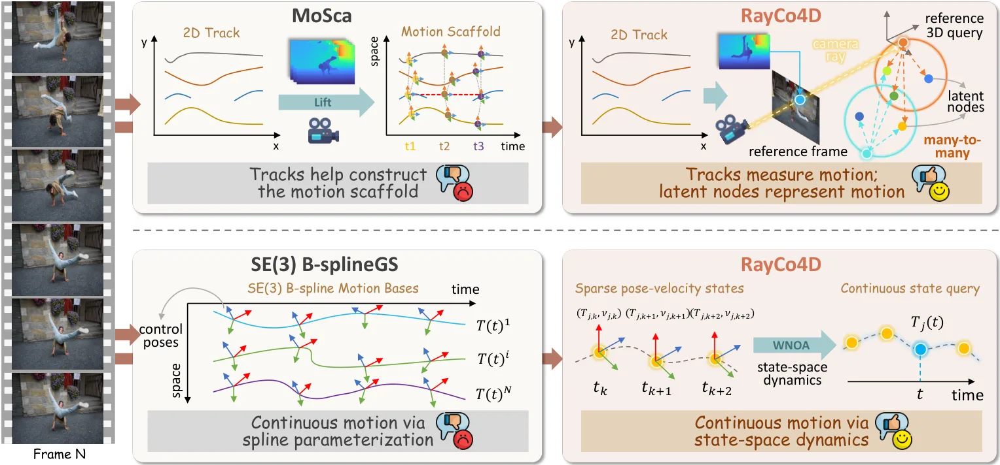
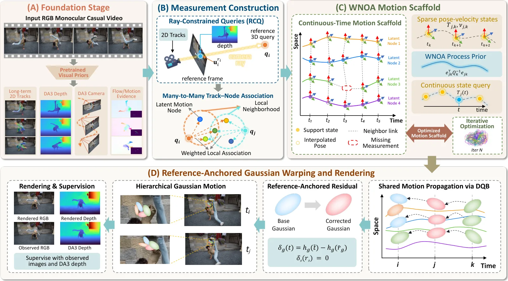
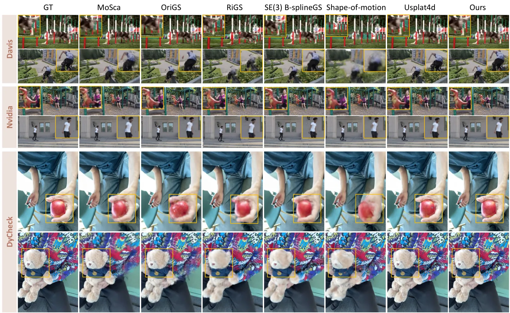
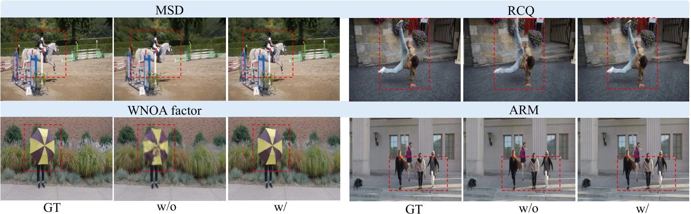
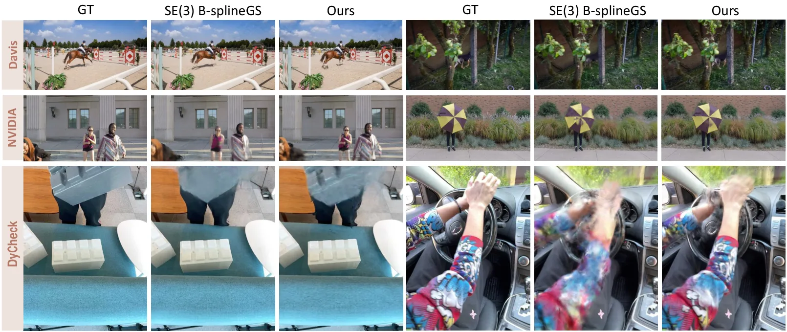
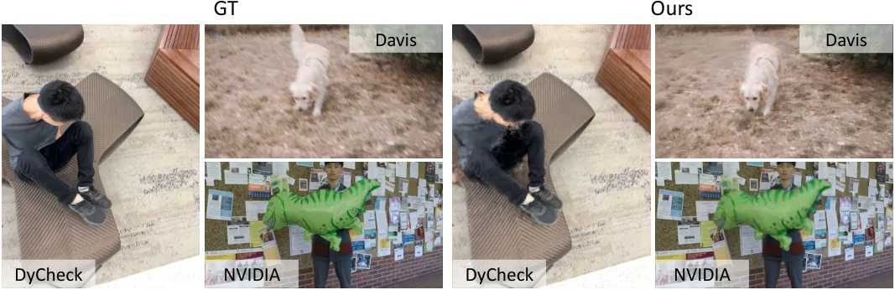

RayCo4D：用射线条件化的连续运动模型做单目 4D 动态重建
RayCo4D: Ray-Conditioned Continuous Motion Model for Monocular 4D Dynamic Reconstruction
它把轨迹从“运动状态”降级为“测量”，于是不同可见区间的观测可以共同约束同一段潜状态序列，中间没有观测的时段由过程模型连起来。DyCheck mPSNR 20.97（USPLAT4D 20.64）、NVIDIA PSNR 27.94（26.99），PCK-T 0.840（B-splineGS 0.832）；代价是逐序列离线优化：200 帧要 86 分钟，其中 36 分钟是 Depth Anything 3 预处理。
DyCheck mPSNR
NVIDIA PSNR
PCK-T
runtime / 200 frames
作者、单位与技术谱系 · Research context
作者与单位
研究脉络
- MoSca（Lei et al., 2025）方法基座关系：从 lifted track 初始化稀疏运动节点、再把节点变换传给高斯；RayCo4D 保留“共享节点”骨架，但取消一对一的 track–节点绑定。[论文 Fig. 1 与 Table 1]
- SE(3) B-splineGS（Zhang et al., 2026）方法基座关系：连续时间运动建模的对照：样条控制位姿 vs 稀疏位姿-速度状态 + WNOA 过程先验。[论文 Fig. 1 与 Table 2/3]
- WNOA 连续时间状态估计（Anderson & Barfoot 等）方法基座关系：过程先验直接借自连续时间状态估计文献，本文的推进是把该先验接到轨迹测量与高斯渲染上。[论文 §1 与 §3]
合作网络
- 南科大 ↔ 复旦 ↔ 华东理工 ↔ 北工商 ↔ SIATSUSTech → SIAT, CAS关系：共同署名[arXiv TeX e-print 作者块]
- RayCo4D → Depth Anything 3RayCo4D → Depth Anything 3关系：技术依赖（相机与深度先验）[论文 §1 与 §4.2 失败案例]
- RayCo4D → MoScaRayCo4D → MoSca关系：技术依赖（共享运动骨架的改写）[论文 Fig. 1 与 §2]
作者单位与角色取自 arXiv TeX 作者块（HTML 未渲染单位）；技术依赖来自正文与图 1 的显式对照。除共同署名与依赖关系外，未推断导师或师生关系。
方法本质拆解 · What actually changed
是不是微调？
不是微调预训练大模型，而是逐序列优化：深度与相机来自冻结的 Depth Anything 3，光流来自 RAFT，真正被优化的是场景的节点状态、高斯与局部残差。所以它没有“训练集泛化”这一说，每个新视频都要重新跑 50 分钟优化。
加了什么先验与约束？
三类约束叠加：射线约束把 3D query 限制在参考帧的相机射线上；WNOA 过程因子把相邻 (pose, velocity) 状态按白噪声加速度耦合；局部残差在参考时刻被强制为单位变换，并加幅值、曲率与邻域一致性正则，防止局部项替代共享运动。
推理时到底做了什么？
推理就是渲染：给定目标时刻，用节点状态与 WNOA 插值求出该时刻的变换，经双四元数混合作用到高斯，再光栅化。没有额外的网络前向，也没有全局 BA；代价全在优化阶段，好处是可以在重建区间内任意连续时刻查询。
方法本质是什么？
本质是把“轨迹身份”和“运动状态身份”解耦：观测按局部邻域汇总到共享节点，节点之间由过程模型连成连续序列。这样一来，不可见区间的状态不是缺失，而是由相邻状态和过程噪声推断出来的，断裂的证据因此能共同约束同一段运动。
输入 2D 轨迹、单目深度与相机，把轨迹改成射线上的测量并汇入 WNOA 耦合的位姿-速度节点序列，再用双四元数传给高斯，直接结果是断裂轨迹也能约束连续运动。

结论与问题Conclusion & Motivation
核心结论
论文的主张可以压成一句：轨迹不是运动状态，而是潜运动的测量。把每条 track 锚定到参考帧的一条相机射线上，让它以多对多方式约束附近的运动节点，断裂的可见区间就能共同约束同一段状态序列。渲染结果是 DyCheck mPSNR 20.97（最强基线 USPLAT4D 20.64）、NVIDIA PSNR 27.94（26.99），PCK-T 0.840（SE(3) B-splineGS 0.832）；代价是 200 帧 86 分钟、纯离线优化，且它并不以位姿精度为评测目标。
动机与问题
单目动态重建的根本困难是每个时刻只有一个视角，几何、相机运动与非刚性形变同时欠约束，遮挡、运动模糊和跟踪失败又进一步把跨帧证据切碎。已有结构化方法在“轨迹与运动状态如何对应”上做了不同选择：MoSca 直接从 lifted track 初始化运动节点轨迹，SE(3) B-splineGS 用样条控制位姿初始化，Shape of Motion 用轨迹监督共享 SE(3) 运动基。它们的共同问题是把轨迹与运动状态绑得太紧，一旦某段轨迹不可见，那段状态就失去约束。
方法Method
方法总览
输入是三样东西：带可见性与置信度的 2D track、Depth Anything 3 给出的相机与深度、RAFT 光流导出的极线线索。第一步 RCQ：每条 track 在可靠参考帧上锚定成一条相机射线上的 3D query，保留射线几何而不自由浮动。第二步 MSD：query 只关联一个局部节点邻域，一条 track 可约束多个节点、一个节点也聚合多条 track 与多个时刻的观测。第三步：节点在稀疏支撑时刻维护 (SE(3) 位姿, 机体系速度)，相邻状态由 WNOA 过程因子连接并给出连续时间插值；最后用双四元数混合把节点运动传给高斯，并叠加参考帧锚定的局部 SE(3) 残差（参考时刻恒等）捕捉细尺度形变。
关键技术细节
WNOA 是白噪声加速度过程先验，来自连续时间状态估计：它假设加速度是白噪声，从而在位姿与速度之间建立线性高斯约束，并自然给出两个支撑时刻之间的插值，用于在任意观测时刻评估残差和渲染。这一点很关键——插值不是后处理，而是估计模型的一部分。优化分两段：先让共享 scaffold 稳定，再开启局部控制项，并对局部残差的幅值、曲率与邻域一致性做正则，防止局部项“接管”共享运动。论文未在正文给出节点数、支撑间隔与 WNOA 噪声密度的具体取值，复现时需要查附录 D.2。

实验Experiments
实验设置
数据集：DyCheck（iPhone 多视角、重叠很少，按共视区域算 mPSNR/mSSIM/mLPIPS）、NVIDIA（单目训练、留出同步视角）、DAVIS（只做定性，无同步真值）。指标：渲染三项 + PCK-T 运动对应 + NVIDIA 的中间时刻重建（训练时被扣掉的时刻）。对照六个方法：MoSca、Shape of Motion（共享运动）、SE(3) B-splineGS（连续时间）、OriGS、RiGS、USPLAT4D。效率口径是 200 帧 DyCheck 序列，端到端 86 分钟，其中 36 分钟预处理、50 分钟优化。
实验数字与比较
DyCheck：mPSNR 20.97 对 USPLAT4D 20.64（+0.33 dB）、mSSIM 0.743 对 0.721、mLPIPS 0.241 对 0.263（−8.4%）。NVIDIA：PSNR 27.94 对 26.99（+0.95 dB）、SSIM 0.872 对 0.853、LPIPS 0.045 对 0.059（−23.7%）。运动对应 PCK-T 0.840，比 SE(3) B-splineGS 的 0.832 高 1.0%、比 MoSca 的 0.822 高 2.2%；NVIDIA 中间时刻 PSNR 26.87 对 25.76（+1.11 dB）。
消融/失败边界
消融在 Table 1 下半部分，四项都做了：去掉多对多关联（w/o MSD）损失最大，DyCheck mPSNR 掉 1.35 dB、NVIDIA 掉 1.33 dB，NVIDIA LPIPS 相对变差 37.8%；去掉射线约束（w/o RCQ）掉到 19.78（−1.19 dB）；去掉 WNOA 过程因子掉到 19.94（−1.03 dB）；去掉局部残差（w/o ARM）只掉 0.18 dB，但 mLPIPS 变差 2.5%、NVIDIA LPIPS 变差 8.9%，说明它主要改善局部细节而非整图保真。作者报告的失败边界是：长观测间隔内运动突变、或几何估计不可靠时，会出现运动错误、几何不一致与可见伪影（附录 E.2）。
局限与迁移Limitations & Transfer
局限与待核验
作者明确承认的局限集中在依赖项：方法吃 Depth Anything 3 的相机与深度质量，长间隔突变会失败。我们待核验的是：86 分钟对应 200 帧单序列，是否有时序增量版本、显存随帧长如何增长；节点数、支撑间隔、WNOA 噪声密度对结果多敏感；DAVIS 只有定性、没有同步真值，因此“快速运动下更好”这句话的定量支撑只在 DyCheck/NVIDIA 上成立；此外它没有报告位姿误差（ATE），对做 SLAM 的人来说这是一个必须自己补的指标。
与你研究路线的关系
最有价值的迁移点是“无观测区间怎么处理”：我们的滑窗优化在 GNSS 失锁或视觉弱纹理时会退化成常速度外推，而 WNOA 给的是带不确定性的连续时间过程约束，本质上把外推变成了可优化的因子。可迁移模块是 WNOA 过程因子 + 位姿/速度状态节点，可直接与现有 IMU 预积分因子并列做对照。下一步实验：在自有序列上做三组最小对照（仅预积分 / 仅 WNOA / 预积分 + WNOA），只评同一段“无观测 2–5 秒”区间的轨迹漂移与协方差一致性，避免被渲染指标带偏。







